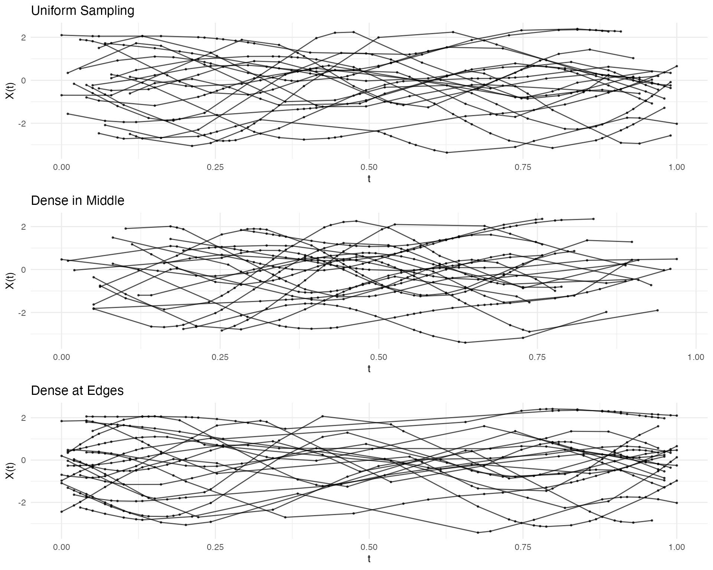
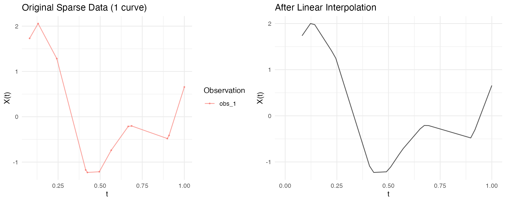
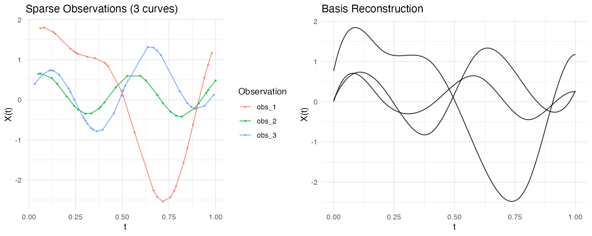
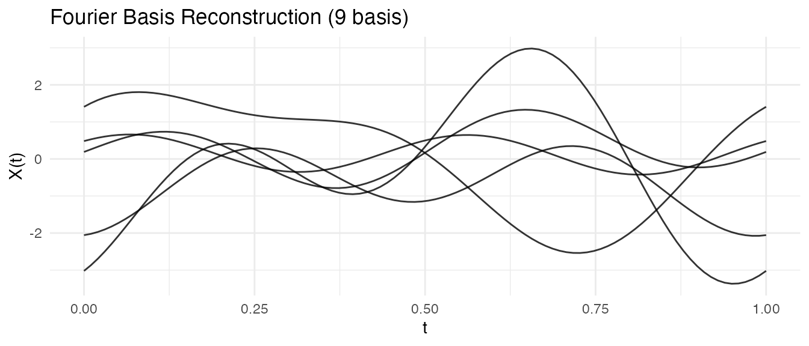
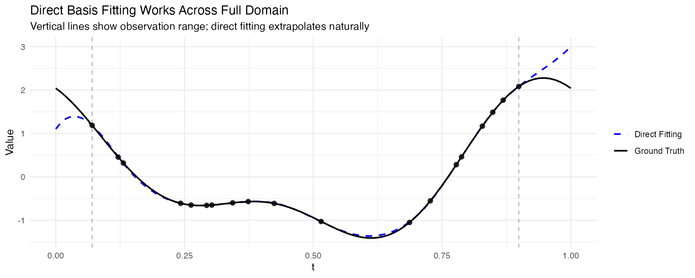
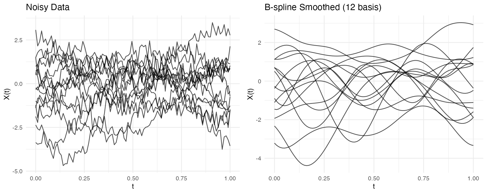
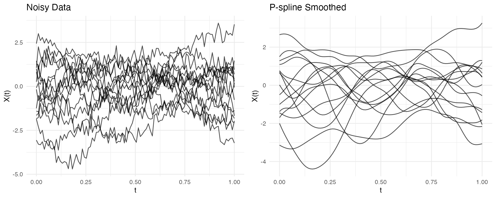
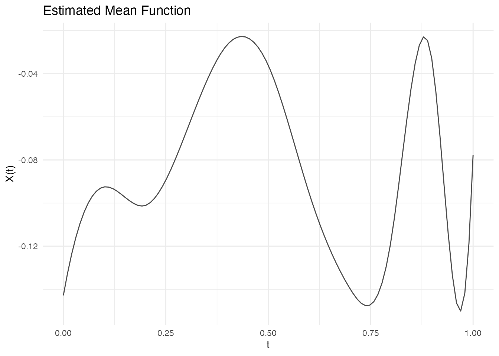
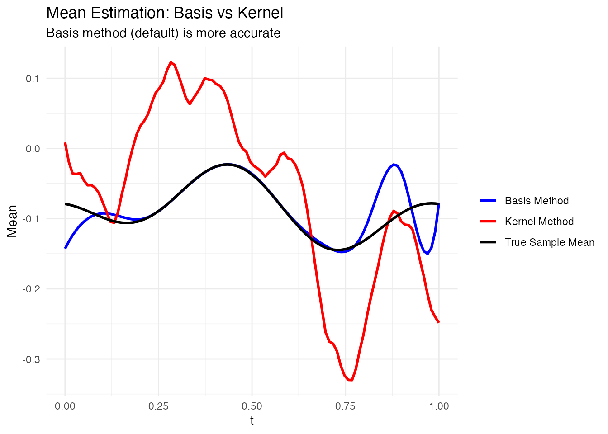

Working with Irregular Functional Data
Source:vignettes/irregular-sampling.Rmd
irregular-sampling.Rmd
library(fdars)
#>
#> Attaching package: 'fdars'
#> The following objects are masked from 'package:stats':
#>
#> cov, decompose, deriv, median, sd, var
#> The following object is masked from 'package:base':
#>
#> norm
library(ggplot2)
theme_set(theme_minimal())Introduction
Many real-world functional data are irregularly sampled, meaning:
- Different curves are observed at different time points
- Observations may be sparse (few points per curve)
- Sampling density may vary within or across curves
The fdars package provides the irregFdata
class to handle such data naturally, avoiding the need for imputation or
interpolation before analysis.
The irregFdata Class
Creating irregFdata Objects
An irregFdata object stores observation times and values
as lists:
# Three curves with different observation points
argvals <- list(
c(0.0, 0.3, 0.7, 1.0), # 4 points
c(0.0, 0.2, 0.4, 0.6, 0.8, 1.0), # 6 points
c(0.1, 0.5, 0.9) # 3 points
)
X <- list(
c(0.1, 0.5, 0.3, 0.2),
c(0.0, 0.4, 0.8, 0.6, 0.4, 0.1),
c(0.3, 0.7, 0.2)
)
ifd <- irregFdata(argvals, X)
print(ifd)
#> Irregular Functional Data Object
#> =================================
#> Number of observations: 3
#> Points per curve:
#> Min: 3
#> Median: 4
#> Max: 6
#> Total: 13
#> Domain: [ 0 , 1 ]Structure
# Number of observations
ifd$n
#> [1] 3
# Observation counts per curve
sapply(ifd$X, length)
#> [1] 4 6 3
# Domain range
ifd$rangeval
#> [1] 0 1Checking Data Type
# Regular fdata
fd_regular <- fdata(matrix(rnorm(100), 10, 10))
is.irregular(fd_regular)
#> [1] FALSE
# Irregular fdata
is.irregular(ifd)
#> [1] TRUESparsifying Regular Data
Use sparsify() to convert regular fdata to
irregFdata:
# Start with regular data
t <- seq(0, 1, length.out = 100)
fd <- simFunData(n = 10, argvals = t, M = 5, seed = 42)
# Create sparse version with 15-30 observations per curve
ifd <- sparsify(fd, minObs = 15, maxObs = 30, seed = 123)
print(ifd)
#> Irregular Functional Data Object
#> =================================
#> Number of observations: 10
#> Points per curve:
#> Min: 16
#> Median: 26.5
#> Max: 30
#> Total: 243
#> Domain: [ 0 , 1 ]Non-Uniform Sparsification
Control sampling density with a probability function:
# More observations in the middle
prob_middle <- function(t) dnorm(t, mean = 0.5, sd = 0.2)
# More observations at the edges (U-shaped probability)
prob_edges <- function(t) 0.1 + 4 * (t - 0.5)^2
fd <- simFunData(n = 20, argvals = t, M = 5, seed = 42)
ifd_uniform <- sparsify(fd, minObs = 15, maxObs = 25, seed = 123)
ifd_middle <- sparsify(fd, minObs = 15, maxObs = 25, prob = prob_middle, seed = 123)
ifd_edges <- sparsify(fd, minObs = 15, maxObs = 25, prob = prob_edges, seed = 123)
p1 <- autoplot(ifd_uniform) + labs(title = "Uniform Sampling")
p2 <- autoplot(ifd_middle) + labs(title = "Dense in Middle")
p3 <- autoplot(ifd_edges) + labs(title = "Dense at Edges")
gridExtra::grid.arrange(p1, p2, p3, ncol = 1)
Converting to Regular Grid
Use as.fdata() to convert back to regular
fdata:
Method: Linear Interpolation
Interpolate between observed points:
# Specify target grid
target_grid <- seq(0, 1, length.out = 50)
fd_interp <- as.fdata(ifd, argvals = target_grid, method = "linear")
# No NAs within observed range
sum(is.na(fd_interp$data))
#> [1] 19
p1 <- autoplot(ifd[1]) + labs(title = "Original Sparse Data (1 curve)")
p2 <- autoplot(fd_interp[1]) + labs(title = "After Linear Interpolation")
gridExtra::grid.arrange(p1, p2, ncol = 2)
#> Warning: Removed 4 rows containing missing values or values outside the scale range
#> (`geom_line()`).
Basis Representation for Sparse Data
Basis representation is a powerful approach for handling irregular/sparse functional data:
- Smooth noisy observations
- Reduce dimensionality (from many observation points to few coefficients)
- Regularize the curves for downstream analysis (FPCA, regression, clustering)
- Convert irregular data to regular representation
For comprehensive coverage of basis functions, see
vignette("basis-representation").
Direct Basis Fitting (Recommended)
The preferred approach for irregular data is to fit basis functions directly to each curve’s observation points using least squares. This avoids interpolation artifacts and handles varying observation densities naturally.
# Create sparse/irregular data
t <- seq(0, 1, length.out = 100)
fd_sim <- simFunData(n = 10, argvals = t, M = 5, seed = 42)
ifd <- sparsify(fd_sim, minObs = 15, maxObs = 30, seed = 123)
# Fit basis directly to irregular data (no interpolation needed!)
coefs <- fdata2basis(ifd, nbasis = 10, type = "bspline")
# Reconstruct on any target grid
fd_smooth <- basis2fdata(coefs, argvals = t, type = "bspline")
# Compare sparse observations vs smooth reconstruction
p1 <- autoplot(ifd[1:3], alpha = 0.8) +
labs(title = "Sparse Observations (3 curves)")
p2 <- autoplot(fd_smooth[1:3], alpha = 0.8) +
labs(title = "Basis Reconstruction")
gridExtra::grid.arrange(p1, p2, ncol = 2)
This approach works with both B-spline and Fourier bases:
# Fourier basis for periodic patterns
coefs_fourier <- fdata2basis(ifd, nbasis = 9, type = "fourier")
fd_fourier <- basis2fdata(coefs_fourier, argvals = t, type = "fourier")
autoplot(fd_fourier[1:5], alpha = 0.8) +
labs(title = "Fourier Basis Reconstruction (9 basis)")
Comparing Approaches: Direct vs Interpolate-Then-Fit
Let’s compare the two approaches. The key advantage of direct fitting is that it works even when observations don’t cover the full domain:
# Create sparse data with known ground truth
t <- seq(0, 1, length.out = 100)
fd_true <- simFunData(n = 5, argvals = t, M = 5, seed = 42)
ifd <- sparsify(fd_true, minObs = 15, maxObs = 25, seed = 456)
# Show observation coverage
cat("Observation ranges per curve:\n")
#> Observation ranges per curve:
for (i in 1:5) {
r <- range(ifd$argvals[[i]])
cat(sprintf(" Curve %d: [%.2f, %.2f] (%d observations)\n",
i, r[1], r[2], length(ifd$argvals[[i]])))
}
#> Curve 1: [0.07, 0.90] (19 observations)
#> Curve 2: [0.03, 1.00] (23 observations)
#> Curve 3: [0.03, 0.99] (21 observations)
#> Curve 4: [0.04, 0.90] (25 observations)
#> Curve 5: [0.00, 1.00] (22 observations)
# APPROACH 1: Direct basis fitting - works on full domain
coefs_direct <- fdata2basis(ifd, nbasis = 12, type = "bspline")
fd_direct <- basis2fdata(coefs_direct, argvals = t, type = "bspline")
# APPROACH 2: Interpolate first - only works within observed range
fd_interp <- as.fdata(ifd, argvals = t, method = "linear")
cat("\nNAs in interpolated data:", sum(is.na(fd_interp$data)),
"(outside observation range)\n")
#>
#> NAs in interpolated data: 38 (outside observation range)
# Visualize for one curve - showing the extrapolation advantage
curve_idx <- 1
obs_t <- ifd$argvals[[curve_idx]]
obs_y <- ifd$X[[curve_idx]]
compare_df <- rbind(
data.frame(t = t, y = fd_true$data[curve_idx, ], method = "Ground Truth"),
data.frame(t = t, y = fd_direct$data[curve_idx, ], method = "Direct Fitting")
)
ggplot() +
geom_line(data = compare_df, aes(x = t, y = y, color = method, linetype = method),
linewidth = 0.8, inherit.aes = FALSE) +
geom_point(data = data.frame(t = obs_t, y = obs_y),
aes(x = t, y = y), size = 2, alpha = 0.8, inherit.aes = FALSE) +
geom_vline(xintercept = range(obs_t), linetype = "dashed", alpha = 0.3) +
scale_color_manual(values = c("Ground Truth" = "black", "Direct Fitting" = "blue")) +
scale_linetype_manual(values = c("Ground Truth" = "solid", "Direct Fitting" = "dashed")) +
labs(title = "Direct Basis Fitting Works Across Full Domain",
subtitle = "Vertical lines show observation range; direct fitting extrapolates naturally",
x = "t", y = "Value", color = NULL, linetype = NULL) +
theme_minimal()
Key observations:
- Direct fitting fits basis functions directly to the sparse observations using least squares, and can extrapolate beyond the observed range
- Interpolate-then-fit requires observations at domain boundaries; gaps produce NAs
- For data with good coverage of the domain, both approaches give similar results
- Direct fitting is the safer choice for truly sparse or irregularly sampled data
Alternative: Interpolate Then Fit
For regular data (or after converting irregular to regular), you can use basis projection:
# Simulate regular functional data
set.seed(123)
fd_sim <- simFunData(n = 15, argvals = seq(0, 1, length.out = 100), M = 5, seed = 42)
# Add noise to simulate measurement error
fd_noisy <- fd_sim
fd_noisy$data <- fd_noisy$data + matrix(rnorm(length(fd_noisy$data), sd = 0.3),
nrow = nrow(fd_noisy$data))
# Project onto B-spline basis (smooths the curves)
coefs <- fdata2basis(fd_noisy, nbasis = 12, type = "bspline")
fd_basis <- basis2fdata(coefs, argvals = fd_noisy$argvals)
# Compare using ggplot2
p1 <- autoplot(fd_noisy, alpha = 0.7) + labs(title = "Noisy Data")
p2 <- autoplot(fd_basis, alpha = 0.7) + labs(title = "B-spline Smoothed (12 basis)")
gridExtra::grid.arrange(p1, p2, ncol = 2)
P-spline Smoothing
P-splines with automatic smoothing parameter selection provide robust results for noisy data:
# Create noisy data for P-spline demo
set.seed(456)
fd_for_pspline <- simFunData(n = 15, argvals = seq(0, 1, length.out = 100), M = 5, seed = 42)
fd_for_pspline$data <- fd_for_pspline$data + matrix(rnorm(length(fd_for_pspline$data), sd = 0.3),
nrow = nrow(fd_for_pspline$data))
# P-spline with fixed lambda (automatic selection can be unstable for some data)
pspline_result <- pspline(fd_for_pspline, nbasis = 20, lambda = 0.01)
# Compare (pspline returns a list; extract $fdata for the smoothed curves)
p1 <- autoplot(fd_for_pspline, alpha = 0.7) + labs(title = "Noisy Data")
p2 <- autoplot(pspline_result$fdata, alpha = 0.7) + labs(title = "P-spline Smoothed")
gridExtra::grid.arrange(p1, p2, ncol = 2)
Choosing the Right Approach
| Approach | Best For | Key Parameters |
|---|---|---|
| Direct basis fitting (irregFdata) | Sparse/irregular data |
nbasis, type
|
| B-spline projection | Regular clean data |
nbasis, type="bspline"
|
| P-spline smoothing | Noisy regular data |
nbasis, lambda
|
| Fourier basis | Periodic/seasonal patterns |
nbasis, type="fourier"
|
Tip: Use fdata2basis_cv() to
automatically select the optimal number of basis functions via
cross-validation.
Operations on Irregular Data
Integration
Compute integrals using trapezoidal rule:
# Create data with known integral
argvals <- list(
seq(0, 1, length.out = 50),
seq(0, 1, length.out = 30)
)
# Constant function = 1 should integrate to 1
X <- list(rep(1, 50), rep(2, 30))
ifd <- irregFdata(argvals, X)
integrals <- int.simpson(ifd)
print(integrals) # Should be approximately 1 and 2
#> [1] 1 2Mean Function Estimation
The mean() function estimates the mean from irregular
data. The default method uses basis reconstruction, which preserves the
functional structure:
# Simulate many curves
fd <- simFunData(n = 50, argvals = t, M = 5, seed = 42)
ifd <- sparsify(fd, minObs = 15, maxObs = 30, seed = 123)
# Estimate mean (default: basis method)
mean_fd <- mean(ifd)
autoplot(mean_fd) + labs(title = "Estimated Mean Function")
# Compare to true sample mean (from original data)
true_mean <- colMeans(fd$data)
# Also try kernel method for comparison
mean_kernel <- mean(ifd, method = "kernel", bandwidth = 0.1)
# Create comparison data frame
compare_df <- rbind(
data.frame(t = t, value = true_mean, type = "True Sample Mean"),
data.frame(t = mean_fd$argvals, value = mean_fd$data[1,], type = "Basis Method"),
data.frame(t = mean_kernel$argvals, value = mean_kernel$data[1,], type = "Kernel Method")
)
ggplot(compare_df, aes(x = t, y = value, color = type)) +
geom_line(linewidth = 1) +
scale_color_manual(values = c("True Sample Mean" = "black",
"Basis Method" = "blue",
"Kernel Method" = "red")) +
labs(title = "Mean Estimation: Basis vs Kernel",
subtitle = "Basis method (default) is more accurate",
x = "t", y = "Mean", color = NULL) +
theme_minimal()
# Compare accuracy
rmse_basis <- sqrt(mean((mean_fd$data[1,] - true_mean)^2))
rmse_kernel <- sqrt(mean((mean_kernel$data[1,] - true_mean)^2))
cat("RMSE (Basis method):", round(rmse_basis, 4), "\n")
#> RMSE (Basis method): 0.0263
cat("RMSE (Kernel method):", round(rmse_kernel, 4), "\n")
#> RMSE (Kernel method): 0.1033Subsetting
Extract specific observations:
ifd <- sparsify(fd[1:10], minObs = 10, maxObs = 20, seed = 123)
# Single observation
ifd_sub1 <- ifd[1]
print(ifd_sub1)
#> Irregular Functional Data Object
#> =================================
#> Number of observations: 1
#> Points per curve:
#> Min: 12
#> Median: 12
#> Max: 12
#> Total: 12
#> Domain: [ 0 , 1 ]
# Multiple observations
ifd_sub23 <- ifd[2:3]
print(ifd_sub23)
#> Irregular Functional Data Object
#> =================================
#> Number of observations: 2
#> Points per curve:
#> Min: 12
#> Median: 15.5
#> Max: 19
#> Total: 31
#> Domain: [ 0 , 1 ]
# Negative indexing
ifd_not1 <- ifd[-1]
ifd_not1$n
#> [1] 9Metadata Support
Store additional covariates with the data:
argvals <- list(c(0, 0.5, 1), c(0, 1), c(0, 0.3, 0.7, 1))
X <- list(c(1, 2, 1), c(0, 2), c(1, 1.5, 1.5, 1))
meta <- data.frame(
group = c("treatment", "control", "treatment"),
age = c(45, 52, 38)
)
ifd <- irregFdata(argvals, X,
id = c("patient_001", "patient_002", "patient_003"),
metadata = meta)
# Access metadata
ifd$id
#> [1] "patient_001" "patient_002" "patient_003"
ifd$metadata
#> group age
#> 1 treatment 45
#> 2 control 52
#> 3 treatment 38
# Subsetting preserves metadata
ifd[1]$metadata
#> group age
#> 1 treatment 45Best Practices
When to Use Irregular Representation
| Scenario | Recommendation |
|---|---|
| Few missing points | Use regular fdata with NA |
| Systematic sparsity | Use irregFdata
|
| Very dense data | Use regular fdata
|
| Mixed observation times | Use irregFdata
|
Memory Considerations
irregFdata is more memory-efficient when data is
sparse:
# Regular: always stores n x m values
n <- 100
m <- 1000
regular_size <- n * m * 8 # bytes (double)
# Irregular: stores only observed values
avg_obs <- 50 # average observations per curve
irreg_size <- n * avg_obs * 8 * 2 # values + argvals
cat("Regular (n=100, m=1000):", regular_size / 1024, "KB\n")
#> Regular (n=100, m=1000): 781.25 KB
cat("Irregular (n=100, ~50 obs each):", irreg_size / 1024, "KB\n")
#> Irregular (n=100, ~50 obs each): 78.125 KBSummary
| Function | Purpose |
|---|---|
irregFdata() |
Create irregular functional data objects |
is.irregular() |
Check if object is irregFdata |
sparsify() |
Convert regular to irregular data |
as.fdata() |
Convert irregular to regular (with interpolation) |
fdata2basis() |
Fit basis coefficients (works with fdata and irregFdata) |
basis2fdata() |
Reconstruct curves from coefficients |
int.simpson() |
Compute integrals (works with fdata and irregFdata) |
norm() |
Compute Lp norms (works with fdata and irregFdata) |
mean() |
Estimate mean via kernel smoothing |
metric.lp() |
Compute pairwise distances (works with fdata and irregFdata) |